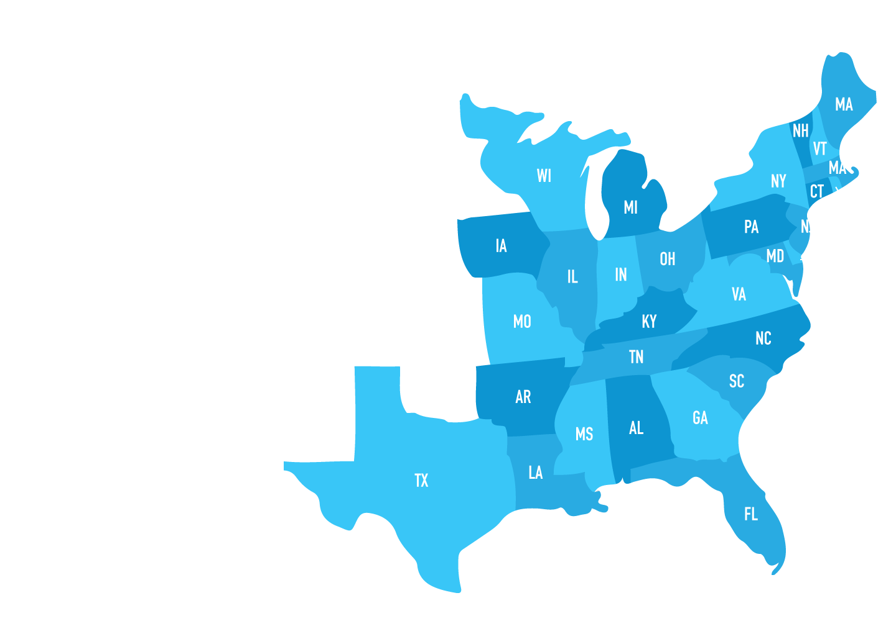
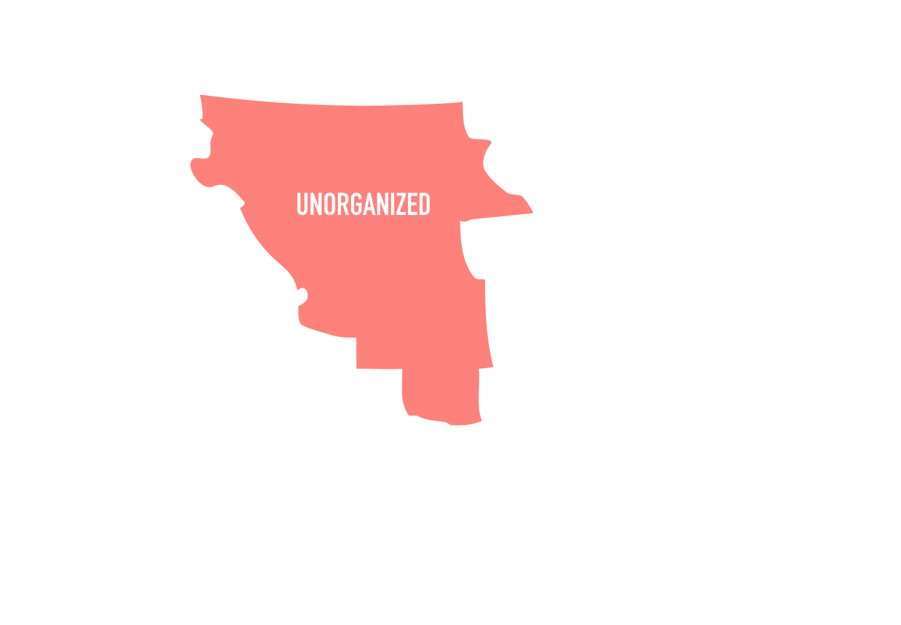
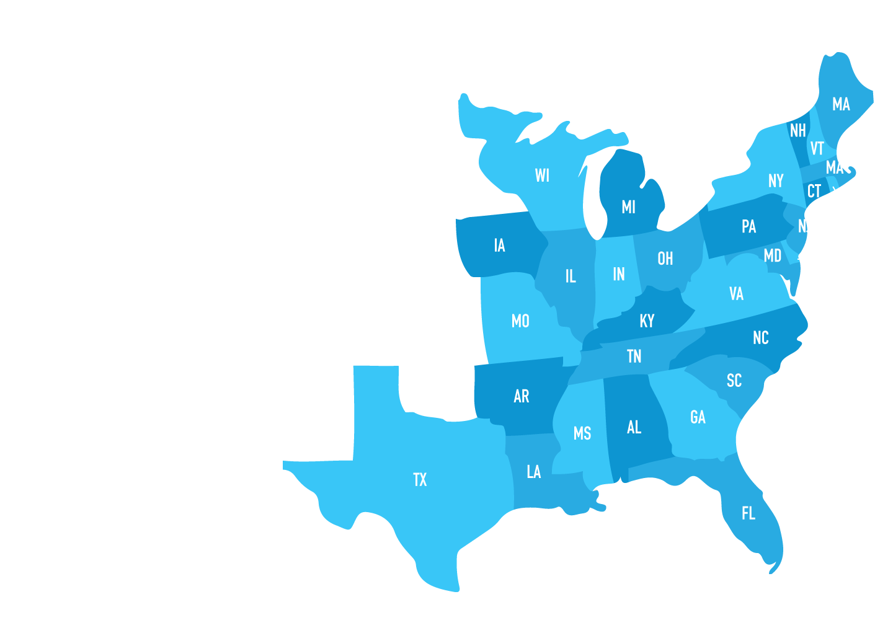
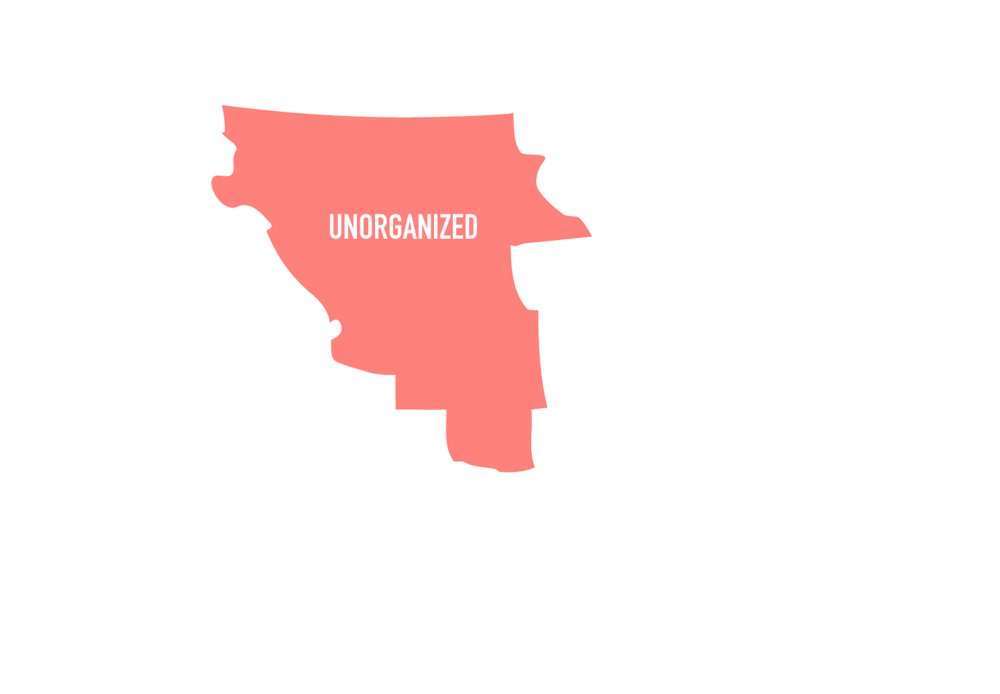

Period 4 includes the beginning of the new century all the way until the Mexican-American War. This is when the country was in full swing and grew larger. However, conflicts arose in this new nation. (AP: This is 10% of your exam so you should know the basics.)
-
Second Great Awakening
1790s-1820s
-
Eli Whitney and the cotton gin
1793
-
Louisiana Purchase
April 30, 1803
-
War of 1812
June 18, 1812-December 24, 1814
-
Era of Good Feelings
1815-1825
-
Adam-Onis Treaty
February 22, 1819
-
Missouri Compromise
March 3, 1820
-
Transcendentalism
1820s-1830s
-
Monroe Doctrine
December 2, 1823
-
Tariff of Abomination
May 19, 1828
-
Indian Removal Act
May 28, 1830
-
Nat Turner's Rebellion
August 1831
-
Nullification Crisis
November 24, 1832
-
Whigs Party
1834
-
Trail of Tears
1838-1839
-
Liberty Party
1730-1750
-
Mexican-American War
April 25, 1846-February 2, 1848
-
Seneca Falls Convention
July 19-20, 1848
The different presidencies definitely characterize the period as each one was involved with something different and known for different things.
Thomas Jefferson
- Democratic Republicans [new political party]- favored limited government and state rights; supported commoners
- Federalists [other political party] - favor strong government and supported the bank
- Jefferson combined both ideals, which led to the Federalist party disappearing out of favor
- John Marshall - appointed to Supreme Court by John Adams (last Federalist)
- Strengthened the Supreme Court and protected private property
- Judicial review - power of the Supreme Court to review the constitutionality of laws passed by Congress
James Madison
- Hartford Convention (1814) - meeting of Federalists during War of 1812, last effort by the Federalists before they dissolved
James Monroe
- Era of Good Feelings (1816-1824) - Mostly James Monroe because there is a one-party system
- Federalists Party dissolved
- End of War of 1812
- Missouri Compromise (1820) - line of 36’ 36
- Northern states shall be free states
John Quincy Adams
- Corrupt Bargaining - Henry Clay teamed up with John Q. Adams
- Adams became the president while Clay became Secretary of State.
- Henry Clay - “the Great Compromiser”, developed American System:
- Economic plan that had 3 parts: tariff protecting industry, national bank, and federal aid for roads and canals
Andrew Jackson
- Spoils System - everyone has the chance to become an official; uneducated people
- Anti-Masonic Party (1832) - first American third party and some joined the Whigs Party
- Introduced nominating conventions and adoption of party platforms
- Whigs (1834) - political party who rose against Jackson
- Notable members include Webster, Clay, Calhoun
- War Hawks - young Southern and Western politicians eager to fight; want new land and an end to Indian-British trade
- Liberty Party 1840 - first antislavery political party
- John C. Calhoun - senator from South Carolina, outlined proslavery argument because it stabilizes societies
- Daniel Webster - supported South Carolina Nullification
- Second Bank of America - privately-owned bank that operate as both commercial bank and agent for the US. charter for 20 years
- Tariff of 1816 - first protective tariff of US history
- Helped protect American textile
- Tariff of 1828 (Tariff of Abominations) - set off tension between Northerners and Southerners
- Proposed to raise taxes because it was thought to be denied
- Ultimately passed and hurt the economy
- Force Bill - authorized the president to use the navy and army to collect tariffs
Within its first century of being a new nation, the United States did face many domestic problems throughout the early 19th century.
- Panic of 1819 - financial panic when the Second Bank of the US tightened credit
- Banks collapsed and mortgages were foreclosed
- Panic of 1837 - recession due to the federal bank moving to state and local banks and specie circular (use gold to pay land)
- Nullification Crisis (1832-1833) - against Tariff of Abomination; declared federal tariff as null and President Jackson used Force Bill to retrieve taxes from South Carolina
- Ended with a compromise to lower tariffs
- Slave Codes - laws that denied slaves basic rights and classified them as properties
A huge concept during this time period is the idea of expansion as the United States doubled in size and Americans made their claim over the land.
- Manifest Destiny - belief that it is America’s “God given right” to expand from sea to shining sea (to the West)
- Louisiana Purchase 1803 - purchased from France for $15 million, doubling the size of US and giving the nation full control over Mississippi River
- Napoleon Bonaparte was in debt from the war between France and Britain and sold the land for a cheap price
- Sparked controversy for President Jefferson, who advocated for strict- interpretation of the Constitution
- His decision reflected a flexible constitution
- Lewis and Clark Expedition (1804-1806) - Meriwether Lewis and William Clark were sent to explore the Louisiana land and reached the Pacific Ocean
- Mexican Cession
- Treaty of Guadalupe Hidalgo
- Provided America with southwestern US, including New Mexico, Arizona, Nevada, Utah, part of Wyoming, Colorado
- Also provided ownership of California and boundary for Texas
- Annexation of Texas (1845) - joint resolution of Congress, granted statehood to the Republican of Texas, who won independence from Mexico in 1836
- Adams-Onis Treaty (1819) - bought Florida from Spain $5 million
Being a new nation did not exempt the United States from dealing with foreign affairs. In fact, it dealt with a great deal in its early years with Great Britain and later on with Mexico.
- Embargo Act 1807 - pressure from Britain and France to accept neutral trading rights so Jefferson banned international trade
- However, Britain was not afraid of the threat and shut down US trade
- War of 1812 - conflict between the United States and Great Britain because Britain was violating US neutral rights on the high seas
- Causes: British impressment of American sailors
- US suspected Britain was encouraging Native Americans to rebel and sold them guns
- War Hawks wanted US intervention, siding with the French
- Treaty of Ghent 1814 - peacefully ended the War of 1812; restored all the territories and boundary that was before the war
- No one was really a clear winner as nothing changed after the war
- Monroe Doctrine 1832 - unilateral declaration that America would be closed to European colonization
- No European interference on the Western Hemisphere or it is seen as a direct attack on the US
- Oregon Treaty 1846 - conflict of ownership of the Pacific Northwest
- Established the 49th latitude that separated US and Britain territory
- Mexican American War (1846-1848) - caused by territorial dispute between US and Mexico.
- Causes: disputes over land; US said border was at the Rio Grande while Mexico said it was at the Nueces River
- Manifest Destiny made people want more land in the West
- US aided Texas’s rebellion, so they wanted to annex it
- Treaty of Guadalupe Hidalgo - ended the war
- Ceded a bunch of land to US at $15 million, gained ⅓ of US
It wouldn’t be America without people trampling on the rights of the minority! Abolitionists fought to end slavery and advocate for their rights.
- American Colonization Society 1817 - organization that wanted to end slavery by liberating slaves and transporting them back to Africa (not the best idea)
- Mason - Dixon Line - boundary between Pennsylvania and Maryland that marked the division between free and slave states before the Civil War
- William Lloyd Garrison - radical abolitionist who wrote The Liberator and wanted the immediate emancipation of slaves
- Developed the American Anti-Slavery Society
- Frederick Douglass - former slave who ran away and become an abolitionist
- Great oral skills and published an autobiography
- Nat Turner’s slave rebellion - around 56-65 killed, highest fatality of any slave uprising
- Gag resolution - stated that no petition against slavery should be received or heard by the House
- South Carolina Post office - burned and stopped antislavery propaganda in the South
Along with slaves, Native Americans continued to be mistreated by the United States and dealt with many hardships.
- Tecumseh and Tenskwatawa (the Prophet) - Shawnee brother who united the tribes east of the Mississippi River to fight against the US
- William Henry Harrison gathered an army and defeated “the Prophet” at the Battle of Tippecanoe
- Battle of Thames is where Tecumseh died
- Indian Removal Act (1830) - law that removed all Native American tribes east of the Mississippi to the Great Plains
- Trail of Tears (1838) - forced march of the Cherokee people from Georgia to Indian Territory in the winter of 1838, thousands died
- Black Hawk - Sauk leader who brought his people back to Illinois
- Captured in 1832 and killed his followers
- Seminole War (1835-1842) - when Seminole tribe residing in Florida resisted the Indian Removal Act; 7 year guerrilla hunting
The United States also experienced an advancement in technology with the Industrial Revolution throughout the beginning of the 19th century.
- Erie Canal (1817-1825) - 350 mile canal that revolutionized shipping
- Industries boomed and cities flourished along river
- Cumberland Road (1811) - first road built by US at the expense of the federal government
- Went from the Potomac River to the Ohio River
- Baltimore and Ohio Railroad (1828) - first steam railroad
- Lowell System - factory management that evolved in textile mills
- First ample of planned automated factories
- Used young women in the countryside to work on machines
- Samuel Slater - father of the American Industrial Revolution, textile technology
- Cyrus McCormick - developed McCormick reaper
- Increased crop yields and decreased the number of field hands (faster harvesting in 1831)
- John Deere - developed steel plow that break up soil (1837) and industrialized the southern farming techniques
- Eli Whitney - developed the cotton gin (1793), revolutionized the south with faster separation of cotton and seed
- Also invented interchangeable parts
Culture also advanced in what can be coined as a Cultural Revolution. New ideas were proposed by both men and women to change society and its way of thinking.
- Second Great Awakening - upsurge in religious activity that was characterized by emotional revival meetings
- Stimulated other reforms, such as slavery, temperance,and the women’s movement
- Seneca Falls Convention (1848) - convention for American women’s rights
- Elizabeth Cady Stanton advocated for women’s right to vote
- Dorothea Dix - special treatment for mentally ill
- Horace Mann - supported better education and public schools
- Frances Wright - feminist who advocated for racial equality, equality for women, birth control, and open sexuality
- Neoclassicism - revival in architecture in the late 1700s and early 1800s that was inspired by Greek and Roman models
- Hudson River School - native school of painting
- Painted primarily landscapes
- Transcendentalism - philosophical and literary movement that believed God existed within human beings and nature
- Focused on intuition and individualism
- Ralph Waldo Emerson - philosopher, writer, and poet
- Sparked individualism, “self-reliance,” and “nature”
- Henry David Thoreau - writer and naturalists “Walden” and introduced Civil Disobedience
- Cult of domesticity - belief that a woman’s proper role in life was found in domestic pursuits, like raising children and taking care of the home
Bottom Line: The presidents who led the nation in its early years impacted the development of it down the road. Political parties came and went with the Democratic-Republicans becoming prominent and the Democrats taking on full speed with President Jackson.
Manifest Destiny became an extremely important ideal the nation held as it continued with its mission to expand west. This also created problems as the expansion of land led to the question of whether or not new states should allow slavery. This problem is discussed in the next period.
The United States is in full swing as a functioning nation with its domestic economic problems and foreign wars. It continues to grow as a nation under the Industrial Revolution and takes a step away from a rural agricultural society.
 


